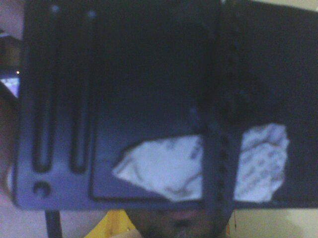

*** Starting my project of face-tracking camera. After so many steps I have installed opencv in my Ubuntu.

1) Attached a servo wing in the base of the webcam. I didn't belive such small servo can take that load. Looks like it is ready to take more loads.